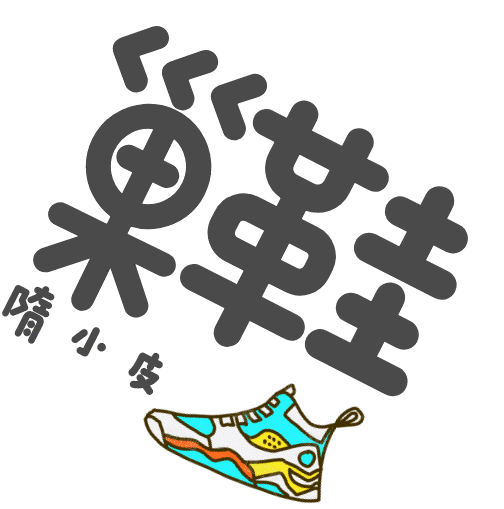

| 空中飞人 (Air Jordan) 是耐克旗下以史上最著名的NBA球星迈克尔・乔丹(Michael Jordan）命名的系列。1985年，迈克尔・乔丹（Michael Jordan）以高薪合约被当时还是小厂家的体育用品生商耐克(Nike) 签约至旗下，耐克 (Nike) 更随即为乔丹推出了第一款以乔丹命名的球鞋，即空中飞人 (Air Jordan) 系列的第一款。虽然这款球鞋在当时并不具备奇特的配色以及新奇的科技，但是谁都不曾想到，这居然会是一个神话的开始。 AIR JORDAN外底使用坚实的牵引力和出色的柔性。凹槽模仿人类脚的自然运动而设计。 Jordan Brand的汤姆Luedecke解释说：“它的纬向工程实际相匹配的足迹。我们正在寻找一个脚印发现鞋的磨损最初发生地方，适量的牵引模式”。 乔丹品牌开发的专有编织技术和标准碳纤维并不会有什么不同，但它的大小和形状是有不同的。它提供了适量的刚性，同时还允许脚自然弯曲。 除了采用“脚踝处的保护绳”这一最新的科技理念之外，AIR JORDAN XX还想尽一切办法利用LASER激光雕刻技术来凸现迈克尔・乔丹以及AIR JORDAN系列的辉煌过去。; |
原价抢鞋最炫酷，切忌无脑冲